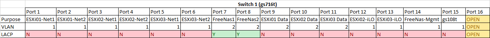
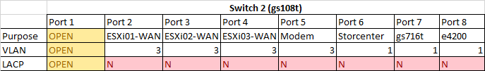

Home Lab - Detailed Overview
This post takes rather detailed look at my current home lab.
Host Configuration
Two HP DL360 G5
Two hosts identically configured with Dual E5420 Procs/16GB RAM. A single 146GB 15k drive is in each and used as temporary storage. Each HP has their iLO configured for remote management and four additional Gig NICs:
- Internal Network (vmnic0, vmnic1)
- Internet Uplink (vmnic2)
- NFS Storage (vmnic3)
Standard switches are used for now, I may try and migrate to a dvSwitch at one point.
Dell T110
Single Dell configured with a single X3430 Processor/12GB RAM. A single 250GB consumer grade SATA drive is used for template/temporary storage. This was my first VMware server, purchased new and as such I didn't have the money to go for a DRAC. It has five NICs - one on-board Gb and a four port PCI-E. The on-board is currently sitting idle, while the other four are configured identically to the HP servers:
- Internal Network (vmnic0, vmnic1)
- Internet Uplink (vmnic2)
- NFS Storage (vmnic3)
FreeNAS (DIY Build)
A DIY build (PCPartPicker Specs) with an AMD 4300 Quad Core proc/8GB RAM. Four 2TB Western Digital Red drives are configured as in RAIDZ2. Two types of shares are currently being presented: CIFS and NFS (although I'm debating dropping CIFS and doing pure NFS). I have three Exports:
- VMware: NFS Mount for shared VM Storage
- ISOs: NFS Mount for VMware ISOs
- Linux: File share for Ubuntu access
The FreeNAS server has an on-board NIC for management, and a four-port gig PCI-E card. Two of the four ports are setup with Link Aggregation.
Iomega StorCenter ix2-200
This was my primary storage prior to the FreeNAS build. It has two mirrored 2TB drives and an NFS mount for Linux. After transitioning to FreeNAS as my primary storage this device has sat idle, however I have plans for it to become my target for backup storage.
Switch Configuration
Netgear gs716t
This switch does the bulk of the heavy lifting. Jumbo frames are enabled for optimal storage networking, port-based VLANs segment the storage and internal network ports. Two ports are configured with LACP to allow FreeNAS extra bandwidth for NFS. A single port acts as an uplink port with the gs108t.

Netgear gs108t
This switch primarily is used for Internet connectivity. Four ports are configured with port-based VLAN #4 - containing each VM host and a direct connection to the Time Warner modem. Additionally, my Linksys e4200 wifi router (used as a dumb switch) gains it's connectivity from this switch, as does my Storcenter ix2-200.

In my next post, I'll address the various VMs I have running in my home lab.